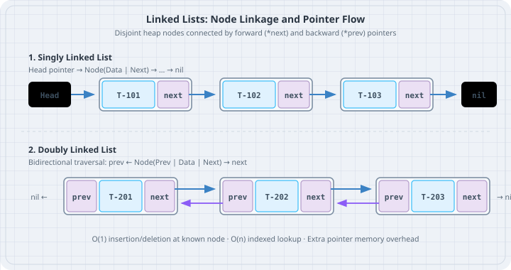

Linked Lists
Linked Lists
A linked list is a linear data structure where elements are stored in discrete node objects connected via pointers (next and prev) rather than contiguous memory slots. The boring default in Python is almost always a standard list, but building singly and doubly linked lists teaches explicit reference manipulation, recursive pointer traversal, and the trade-offs of CPU cache locality.

Mental model
In a singly linked list, each node holds a data value and a reference to the next node. In a doubly linked list, each node holds references to both its successor (next) and predecessor (prev).
Singly Linked:
[Head] -> [Data: 101 | Next] -> [Data: 102 | Next] -> None
Doubly Linked:
None <- [Prev | Data: 101 | Next] <===> [Prev | Data: 102 | Next] -> NonePython List vs Linked List: The Cache Reality
Python’s built-in list is a dynamically resized contiguous array of pointers to objects:
| Feature | Python list |
Doubly Linked List |
|---|---|---|
| Contiguity | Pointers stored contiguously | Nodes scattered arbitrarily across the heap |
| Memory Overhead | Very compact (single array) | Heavy (each node is a separate Python object with dict/slots) |
| Prepend / Insert at 0 | \(O(n)\) (shifts pointer array) | \(O(1)\) (rewires pointers) |
Random Access items[i] |
\(O(1)\) instant lookup | \(O(n)\) linear traversal |
| Cache Locality | High | Low (frequent CPU cache misses) |
Use linked lists when building complex structural graph foundations or an LRU cache where individual nodes must be moved between head and tail in \(O(1)\) time without index lookups.
Worked examples
Case 1: Singly Linked List with in-place reversal
Save as singly_linked.py. Implement a generic singly linked list for desk routing tickets and reverse it in place.
# singly_linked.py
from dataclasses import dataclass
from typing import Iterator
@dataclass
class Node[T]:
value: T
next: "Node[T] | None" = None
class SinglyLinkedList[T]:
def __init__(self) -> None:
self.head: Node[T] | None = None
self._size = 0
def append(self, val: T) -> None:
new_node = Node(value=val)
if self.head is None:
self.head = new_node
self._size += 1
return
curr = self.head
while curr.next is not None:
curr = curr.next
curr.next = new_node
self._size += 1
def reverse(self) -> None:
prev: Node[T] | None = None
curr = self.head
while curr is not None:
next_node = curr.next
curr.next = prev
prev = curr
curr = next_node
self.head = prev
def __iter__(self) -> Iterator[T]:
curr = self.head
while curr is not None:
yield curr.value
curr = curr.next
def __len__(self) -> int:
return self._size
def main() -> None:
tickets: SinglyLinkedList[str] = SinglyLinkedList()
tickets.append("Ticket-101")
tickets.append("Ticket-102")
tickets.append("Ticket-103")
print("Original order:", list(tickets))
print("Reversing linked list in place...")
tickets.reverse()
print("Reversed order: ", list(tickets))
if __name__ == "__main__":
main()Run:
uv run python singly_linked.pyOutput:
Original order: ['Ticket-101', 'Ticket-102', 'Ticket-103']
Reversing linked list in place...
Reversed order: ['Ticket-103', 'Ticket-102', 'Ticket-101']Case 2: Doubly Linked List with O(1) Node Removal
Save as doubly_linked.py. Implement a doubly linked list where any node can unlink itself from the chain in \(O(1)\) time.
# doubly_linked.py
class DNode[T]:
__slots__ = ("value", "prev", "next")
def __init__(self, value: T) -> None:
self.value: T = value
self.prev: DNode[T] | None = None
self.next: DNode[T] | None = None
class DoublyLinkedList[T]:
def __init__(self) -> None:
self.head: DNode[T] | None = None
self.tail: DNode[T] | None = None
self._size = 0
def append(self, val: T) -> DNode[T]:
node = DNode(val)
if self.tail is None:
self.head = node
self.tail = node
else:
node.prev = self.tail
self.tail.next = node
self.tail = node
self._size += 1
return node
def remove(self, node: DNode[T]) -> None:
if node.prev is not None:
node.prev.next = node.next
else:
self.head = node.next
if node.next is not None:
node.next.prev = node.prev
else:
self.tail = node.prev
node.next = None
node.prev = None
self._size -= 1
def to_list(self) -> list[T]:
items: list[T] = []
curr = self.head
while curr is not None:
items.append(curr.value)
curr = curr.next
return items
def main() -> None:
dll: DoublyLinkedList[int] = DoublyLinkedList()
n1 = dll.append(201)
n2 = dll.append(202)
n3 = dll.append(203)
print("Initial items:", dll.to_list())
print(f"Removing middle node {n2.value} in O(1)...")
dll.remove(n2)
print("After middle removal:", dll.to_list())
print(f"Removing head node {n1.value} in O(1)...")
dll.remove(n1)
print("After head removal: ", dll.to_list())
assert dll.tail is n3Run:
uv run python doubly_linked.pyOutput:
Initial items: [201, 202, 203]
Removing middle node 202 in O(1)...
After middle removal: [201, 203]
Removing head node 201 in O(1)...
After head removal: [203]The trap
The most common trap in Python linked lists is memory bloat. Each Python object carries a substantial overhead (at least 56 bytes for an object dictionary and garbage collector headers). If you allocate 1,000,000 Node instances without __slots__ = ("value", "prev", "next"), your application consumes ~160 MB of memory just for node envelopes, compared to ~8 MB for a native list.
Always declare __slots__ on node classes to prevent the creation of per-instance __dict__ structures.
The boring rule
- Use standard Python
listby default. It has superior cache locality and is implemented in C. - If you need efficient FIFO queue operations or deque pushes, use
collections.dequeinstead of writing a custom linked list. - When authoring custom node classes, always add
__slots__ = (...)to eliminate per-instance dictionary overhead. - When unlinking a node, explicitly clear
node.next = Noneandnode.prev = Noneto break cyclic references and aid Python’s reference-counting garbage collector.
Try this
- Implement
find(predicate)onSinglyLinkedListthat returns the first matching node reference. - Build an
LRUCache(capacity=3)using a combination of PythondictandDoublyLinkedListwhere reading an item moves its node to the head in \(O(1)\) time.